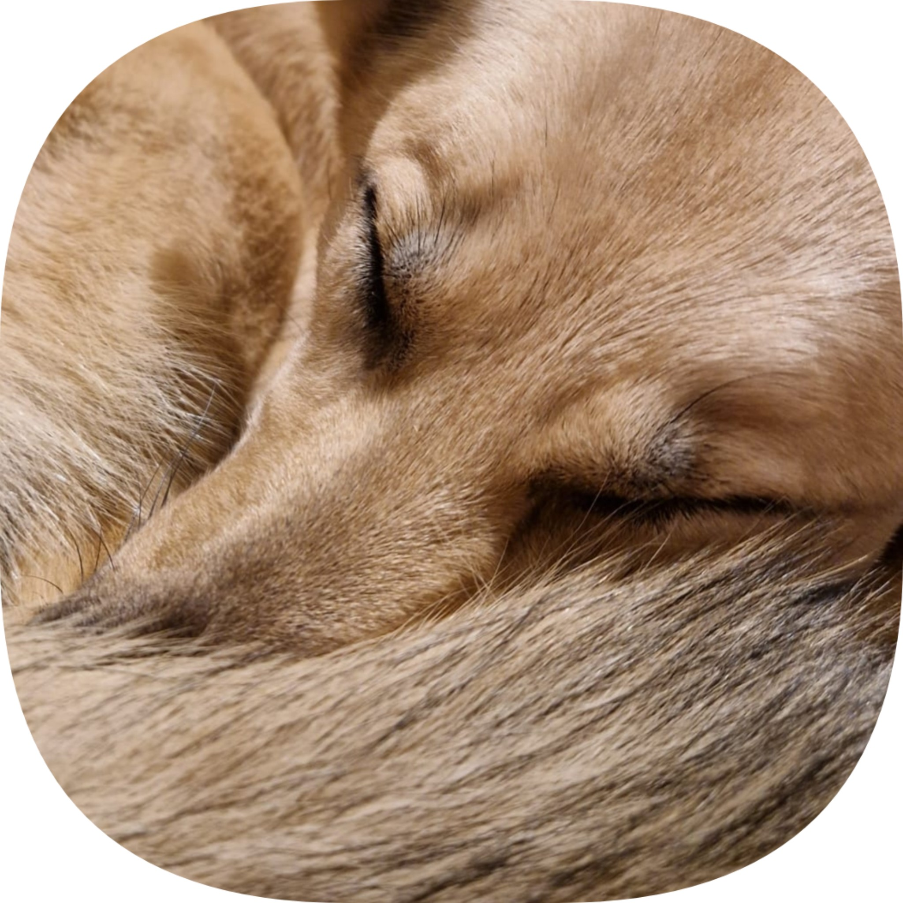
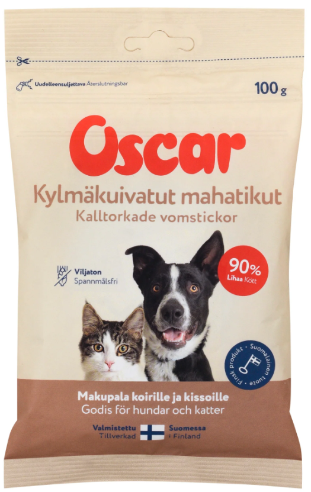
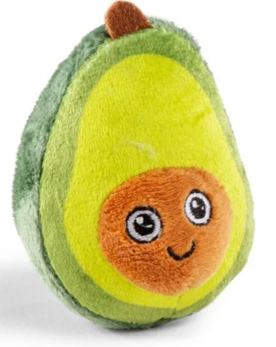
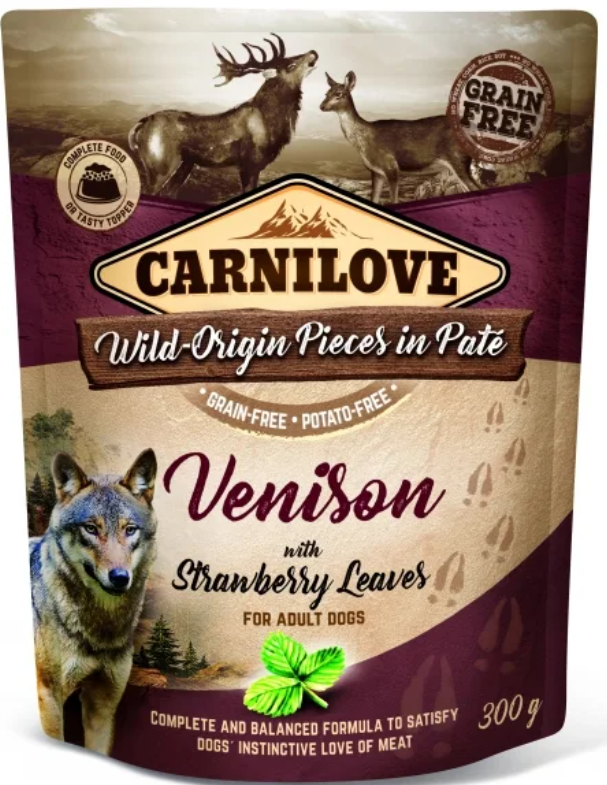

Inkiväärin ehdoton herkku on kylmäkuivatut mahatikut. Kun tätä pussia rapistellaan, Inkivääri juoksee häntä heiluen paikalle! Näitä herkkuja voi ostaa esimerkiksi Eläinruokatehdas Lemmikki Oy:n Tehtaanmyymälästä Kuopiosta. Alla olevasta linkistä pääset tutustumaan Oscar-merkin Instagram sivuihin.

Pieni vinkuva avokado pehmo on Inkiväärin lempparilelu. Se saa Inkiväärin aina innostumaan leikkihetkestä. Tällaisia söpöjä avokadoja voi ostaa esimerkiksi Peten Koirantarvikkeesta. Alla olevasta linkistä pääset vierailemaan Peten Koirantarvikkeen Instagram sivulle.

Carnilove-merkin märkäruuat ovat Inkiväärin lemppareita. Niitä voi lisätä sellaisenaan vaikka raksujen joukkoon tai syödä Inkiväärin suosimalla tavalla: jäädytettynä. Näitä voi ostaa esimerkiksi Musti ja Mirri-liikkeistä. Alla olevasta linkistä pääset tutustumaan Mustin ja Mirrin Instagram sivuun.